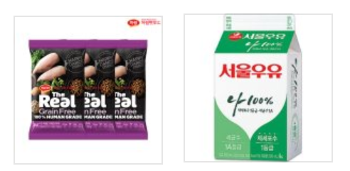
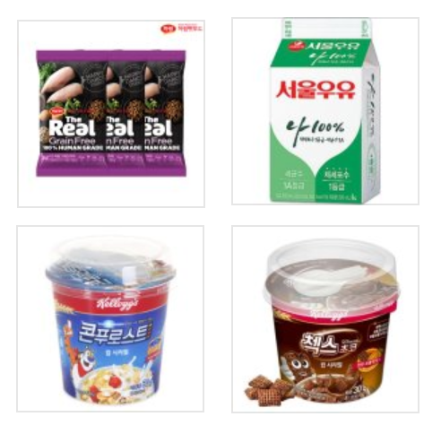

고양이 시리얼 150g, 우유, 사람 시리얼 90g(30g x 3)
(패키지 구성이 좀 바뀌었는데, 이유는 상기 후술)
톱밥맛이 난다. 톱밥냄새에 톱밥 맛이다. 굉장히 강렬하고 맛없음.
나 말고도 두 명정도 더 시식해봤는데 일단 맛은 없다는 평가는 동일,
한 명은 비리지만 먹을 만 하다는 평을 보면 케바케가 큰듯함.
그래도 도저히 사람이 먹기엔 좀 아니다 싶어서 패키지 구성을 좀 추가함.
에서
로 사람용 식사 시리얼 추가
믿음과 신뢰의 켈로그. 맛있음.
식사에 의미를 둔다면 콘푸로스트, 간식에 의미를 둔다면 첵스초코가 적절.
우유에 말아먹으면 더 맛있음.
간단하고 맛있게 세 끼를 해결할 수 있는 점이 좋다. 가격도 저렴함.
고양이 + 사람의 하루 식사에 만 원이면 상당히 저렴하다고 할 수 있음.
고양이를 안키워서 대신 사료 리뷰를 조사해봤는데 평이 상당히 괜찮은 듯함.
2019.03.24 SOYOON_J all rights reserved.